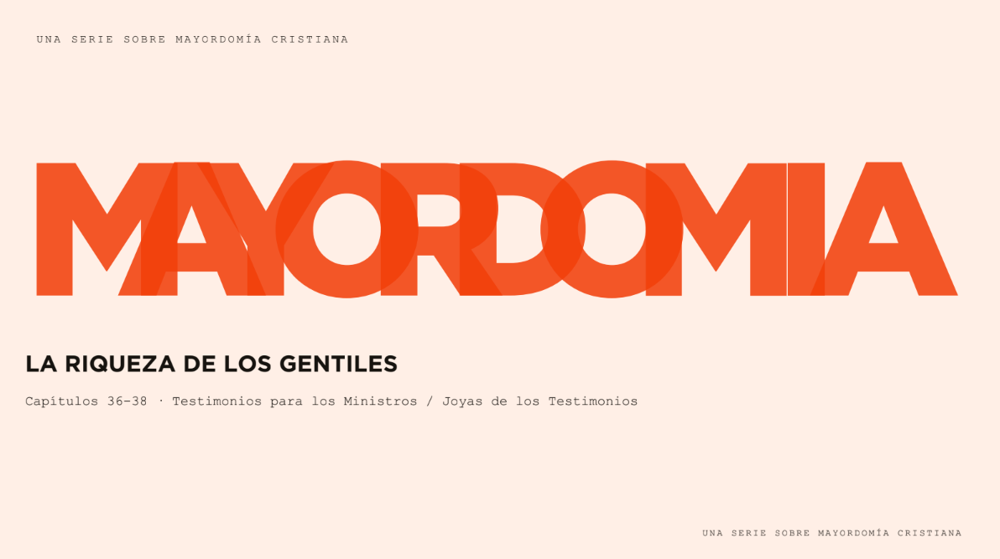
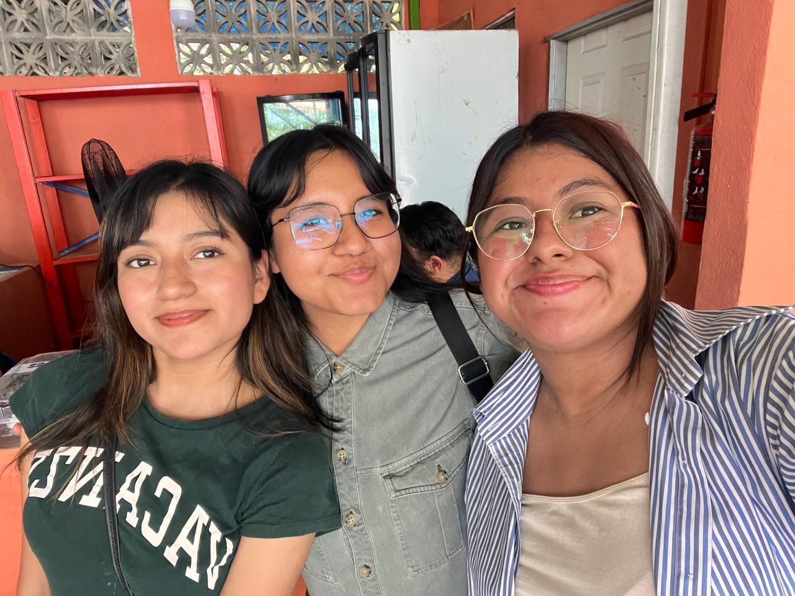
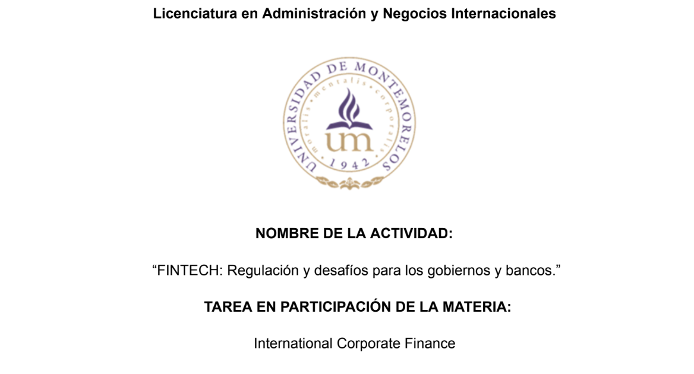
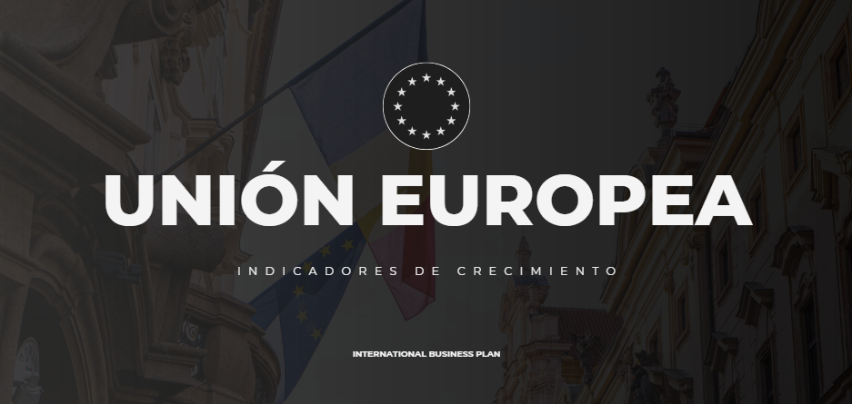
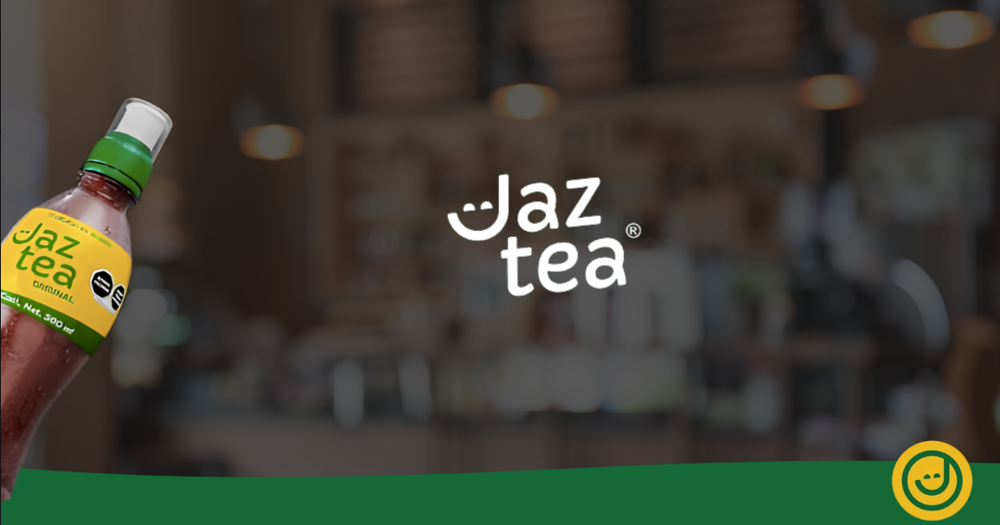
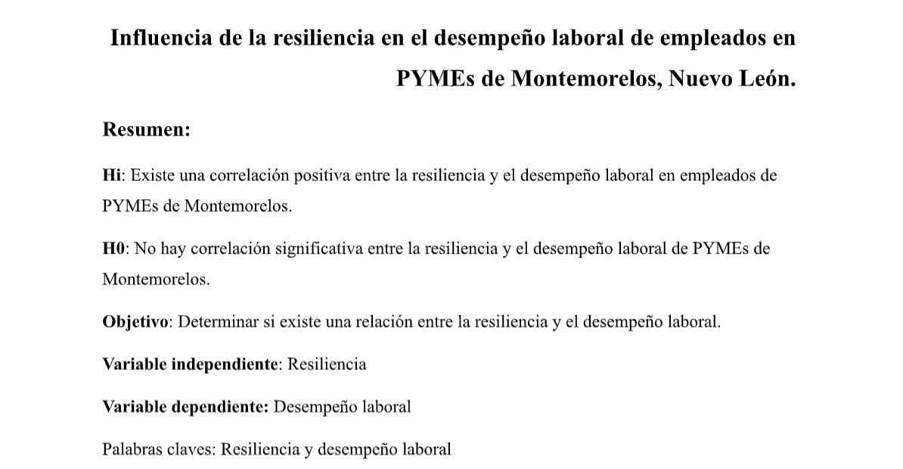
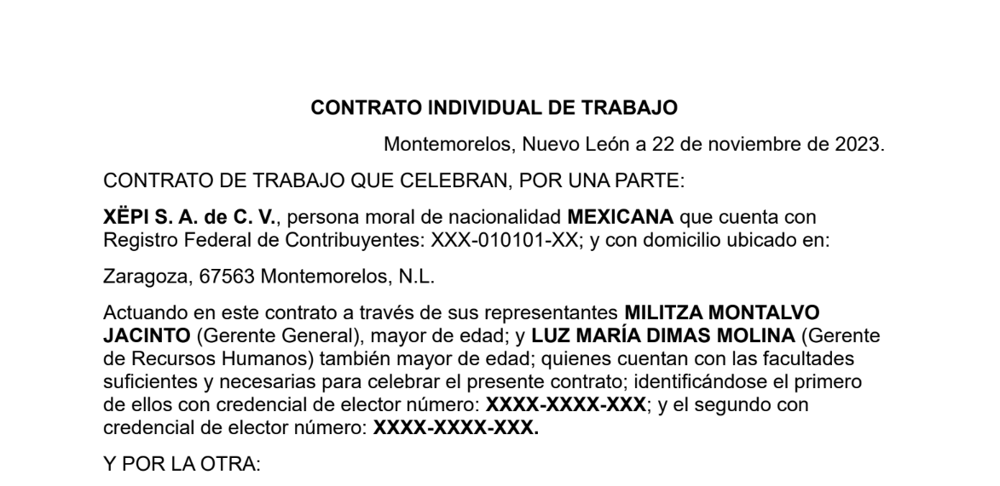
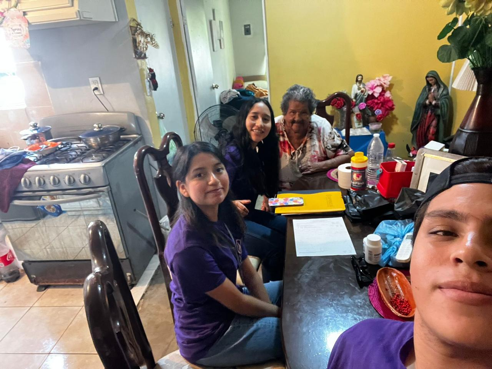

A.1
Fe y propósito
Reflexión sobre mi fe, principios y propósito de vida.
PORTAFOLIO
Administración y Negocios Internacionales
Cuatro dimensiones que reflejan mi formación, perspectiva y capacidad de aplicación.
Mi manera de comprender la vida parte de la fe en Dios. Reconozco que mis capacidades, decisiones y oportunidades implican una responsabilidad que debo ejercer con propósito y coherencia.
Reconozco a Dios como fundamento de mis decisiones y de la dirección que doy a mi vida.

Reflexión sobre mi fe, principios y propósito de vida.

Experiencias relacionadas con la práctica de mis convicciones.
Transferir de modo pertinente e innovador el conocimiento profesional a situaciones laborales reales.
Tomar decisiones asertivas tomando en cuenta las prioridades de los grupos de interés y aplicando las legislaciones laborales, fiscales, aduaneras, de comercio exterior y los diferentes tratados internacionales.

Aplicación de conocimientos adquiridos durante el proyecto integrador.

Análisis del entorno económico y comercial de Europa desde una perspectiva internacional.
Generar aportes significativos y de calidad relacionados con su profesión a partir de proyectos de investigación o de la aplicación de investigaciones.
Al identificar, plantear y resolver problemas aplicando el pensamiento crítico.

Análisis estratégico para la expansión internacional de JAZTEA al mercado tunecino.

Análisis estadístico de datos sobre resiliencia y desempeño en empleados de PyMEs.
Integro mis conocimientos y habilidades en proyectos, equipos de trabajo y experiencias que requieren organización, iniciativa y capacidad de adaptación.
Organización de actividades, recursos y responsabilidades para alcanzar objetivos.

Coordinación interdisciplinaria y asignación de responsabilidades según áreas de especialidad.

Adaptación de las actividades de Salud en Casa a las necesidades reales de la familia acompañada.
Algunos espacios y proyectos en los que he participado y que han contribuido a mi desarrollo.
Desarrollo de una propuesta empresarial enfocada en el cuidado de la piel.
Participación en actividades editoriales y procesos administrativos.
Coordinación de marketing y participación en iniciativas de emprendimiento.
Participación en actividades y procesos de carácter organizacional.
Participación en actividades formativas y de servicio comunitario.